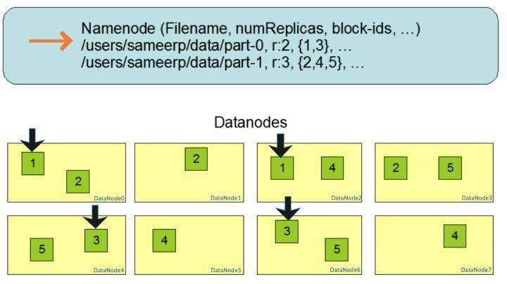
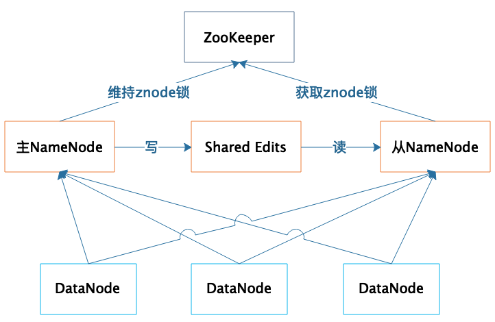

- 00 开篇词 为什么说每个软件工程师都应该懂大数据技术？.md.html
- 01 大数据技术发展史：大数据的前世今生.md.html
- 02 大数据应用发展史：从搜索引擎到人工智能.md.html
- 03 大数据应用领域：数据驱动一切.md.html
- 04 移动计算比移动数据更划算.md.html
- 05 从RAID看垂直伸缩到水平伸缩的演化.md.html
- 06 新技术层出不穷，HDFS依然是存储的王者.md.html
- 07 为什么说MapReduce既是编程模型又是计算框架？.md.html
- 08 MapReduce如何让数据完成一次旅行？.md.html
- 09 为什么我们管Yarn叫作资源调度框架？.md.html
- 10 模块答疑：我们能从Hadoop学到什么？.md.html
- 11 Hive是如何让MapReduce实现SQL操作的？.md.html
- 12 我们并没有觉得MapReduce速度慢，直到Spark出现.md.html
- 13 同样的本质，为何Spark可以更高效？.md.html
- 14 BigTable的开源实现：HBase.md.html
- 15 流式计算的代表：Storm、Flink、Spark Streaming.md.html
- 16 ZooKeeper是如何保证数据一致性的？.md.html
- 17 模块答疑：这么多技术，到底都能用在什么场景里？.md.html
- 18 如何自己开发一个大数据SQL引擎？.md.html
- 19 Spark的性能优化案例分析（上）.md.html
- 20 Spark的性能优化案例分析（下）.md.html
- 21 从阿里内部产品看海量数据处理系统的设计（上）：Doris的立项.md.html
- 22 从阿里内部产品看海量数据处理系统的设计（下）：架构与创新.md.html
- 23 大数据基准测试可以带来什么好处？.md.html
- 24 从大数据性能测试工具Dew看如何快速开发大数据系统.md.html
- 25 模块答疑：我能从大厂的大数据开发实践中学到什么？.md.html
- 26 互联网产品 + 大数据产品 = 大数据平台.md.html
- 27 大数据从哪里来？.md.html
- 28 知名大厂如何搭建大数据平台？.md.html
- 29 盘点可供中小企业参考的商业大数据平台.md.html
- 30 当大数据遇上物联网.md.html
- 31 模块答疑：为什么大数据平台至关重要？.md.html
- 32 互联网运营数据指标与可视化监控.md.html
- 33 一个电商网站订单下降的数据分析案例.md.html
- 34 A_B测试与灰度发布必知必会.md.html
- 35 如何利用大数据成为“增长黑客”？.md.html
- 36 模块答疑：为什么说数据驱动运营？.md.html
- 37 如何对数据进行分类和预测？.md.html
- 38 如何发掘数据之间的关系？.md.html
- 39 如何预测用户的喜好？.md.html
- 40 机器学习的数学原理是什么？.md.html
- 41 从感知机到神经网络算法.md.html
- 42 模块答疑：软件工程师如何进入人工智能领域？.md.html
- 所有的不确定都是机会——智慧写给你的新年寄语.md.html
- 第2季回归丨大数据之后，让我们回归后端.md.html
- 结束语 未来的你，有无限可能.md.html
- 捐赠
06 新技术层出不穷，HDFS依然是存储的王者
我们知道，Google大数据“三驾马车”的第一驾是GFS（Google 文件系统），而Hadoop的第一个产品是HDFS，可以说分布式文件存储是分布式计算的基础，也可见分布式文件存储的重要性。如果我们将大数据计算比作烹饪，那么数据就是食材，而Hadoop分布式文件系统HDFS就是烧菜的那口大锅。
厨师来来往往，食材进进出出，各种菜肴层出不穷，而不变的则是那口大锅。大数据也是如此，这些年来，各种计算框架、各种算法、各种应用场景不断推陈出新，让人眼花缭乱，但是大数据存储的王者依然是HDFS。
为什么HDFS的地位如此稳固呢？在整个大数据体系里面，最宝贵、最难以代替的资产就是数据，大数据所有的一切都要围绕数据展开。HDFS作为最早的大数据存储系统，存储着宝贵的数据资产，各种新的算法、框架要想得到人们的广泛使用，必须支持HDFS才能获取已经存储在里面的数据。所以大数据技术越发展，新技术越多，HDFS得到的支持越多，我们越离不开HDFS。HDFS也许不是最好的大数据存储技术，但依然最重要的大数据存储技术。
那我们就从HDFS的原理说起，今天我们来聊聊HDFS是如何实现大数据高速、可靠的存储和访问的。
Hadoop分布式文件系统HDFS的设计目标是管理数以千计的服务器、数以万计的磁盘，将这么大规模的服务器计算资源当作一个单一的存储系统进行管理，对应用程序提供数以PB计的存储容量，让应用程序像使用普通文件系统一样存储大规模的文件数据。
如何设计这样一个分布式文件系统？其实思路很简单。
我们先复习一下专栏上一期，我讲了RAID磁盘阵列存储，RAID将数据分片后在多块磁盘上并发进行读写访问，从而提高了存储容量、加快了访问速度，并通过数据的冗余校验提高了数据的可靠性，即使某块磁盘损坏也不会丢失数据。将RAID的设计理念扩大到整个分布式服务器集群，就产生了分布式文件系统，Hadoop分布式文件系统的核心原理就是如此。
和RAID在多个磁盘上进行文件存储及并行读写的思路一样，HDFS是在一个大规模分布式服务器集群上，对数据分片后进行并行读写及冗余存储。因为HDFS可以部署在一个比较大的服务器集群上，集群中所有服务器的磁盘都可供HDFS使用，所以整个HDFS的存储空间可以达到PB级容量。

上图是HDFS的架构图，从图中你可以看到HDFS的关键组件有两个，一个是DataNode，一个是NameNode。
DataNode负责文件数据的存储和读写操作，HDFS将文件数据分割成若干数据块（Block），每个DataNode存储一部分数据块，这样文件就分布存储在整个HDFS服务器集群中。应用程序客户端（Client）可以并行对这些数据块进行访问，从而使得HDFS可以在服务器集群规模上实现数据并行访问，极大地提高了访问速度。
在实践中，HDFS集群的DataNode服务器会有很多台，一般在几百台到几千台这样的规模，每台服务器配有数块磁盘，整个集群的存储容量大概在几PB到数百PB。
NameNode负责整个分布式文件系统的元数据（MetaData）管理，也就是文件路径名、数据块的ID以及存储位置等信息，相当于操作系统中文件分配表（FAT）的角色。HDFS为了保证数据的高可用，会将一个数据块复制为多份（缺省情况为3份），并将多份相同的数据块存储在不同的服务器上，甚至不同的机架上。这样当有磁盘损坏，或者某个DataNode服务器宕机，甚至某个交换机宕机，导致其存储的数据块不能访问的时候，客户端会查找其备份的数据块进行访问。
下面这张图是数据块多份复制存储的示意，图中对于文件/users/sameerp/data/part-0，其复制备份数设置为2，存储的BlockID分别为1、3。Block1的两个备份存储在DataNode0和DataNode2两个服务器上，Block3的两个备份存储DataNode4和DataNode6两个服务器上，上述任何一台服务器宕机后，每个数据块都至少还有一个备份存在，不会影响对文件/users/sameerp/data/part-0的访问。

和RAID一样，数据分成若干数据块后存储到不同服务器上，可以实现数据大容量存储，并且不同分片的数据可以并行进行读/写操作，进而实现数据的高速访问。你可以看到，HDFS的大容量存储和高速访问相对比较容易实现，但是HDFS是如何保证存储的高可用性呢？
我们尝试从不同层面来讨论一下HDFS的高可用设计。
1.数据存储故障容错
磁盘介质在存储过程中受环境或者老化影响，其存储的数据可能会出现错乱。HDFS的应对措施是，对于存储在DataNode上的数据块，计算并存储校验和（CheckSum）。在读取数据的时候，重新计算读取出来的数据的校验和，如果校验不正确就抛出异常，应用程序捕获异常后就到其他DataNode上读取备份数据。
2.磁盘故障容错
如果DataNode监测到本机的某块磁盘损坏，就将该块磁盘上存储的所有BlockID报告给NameNode，NameNode检查这些数据块还在哪些DataNode上有备份，通知相应的DataNode服务器将对应的数据块复制到其他服务器上，以保证数据块的备份数满足要求。
3.DataNode故障容错
DataNode会通过心跳和NameNode保持通信，如果DataNode超时未发送心跳，NameNode就会认为这个DataNode已经宕机失效，立即查找这个DataNode上存储的数据块有哪些，以及这些数据块还存储在哪些服务器上，随后通知这些服务器再复制一份数据块到其他服务器上，保证HDFS存储的数据块备份数符合用户设置的数目，即使再出现服务器宕机，也不会丢失数据。
4.NameNode故障容错
NameNode是整个HDFS的核心，记录着HDFS文件分配表信息，所有的文件路径和数据块存储信息都保存在NameNode，如果NameNode故障，整个HDFS系统集群都无法使用；如果NameNode上记录的数据丢失，整个集群所有DataNode存储的数据也就没用了。
所以，NameNode高可用容错能力非常重要。NameNode采用主从热备的方式提供高可用服务，请看下图。

集群部署两台NameNode服务器，一台作为主服务器提供服务，一台作为从服务器进行热备，两台服务器通过ZooKeeper选举，主要是通过争夺znode锁资源，决定谁是主服务器。而DataNode则会向两个NameNode同时发送心跳数据，但是只有主NameNode才能向DataNode返回控制信息。
正常运行期间，主从NameNode之间通过一个共享存储系统shared edits来同步文件系统的元数据信息。当主NameNode服务器宕机，从NameNode会通过ZooKeeper升级成为主服务器，并保证HDFS集群的元数据信息，也就是文件分配表信息完整一致。
对于一个软件系统而言，性能差一点，用户也许可以接受；使用体验差，也许也能忍受。但是如果可用性差，经常出故障导致不可用，那就比较麻烦了；如果出现重要数据丢失，那开发工程师绝对是摊上大事了。
而分布式系统可能出故障地方又非常多，内存、CPU、主板、磁盘会损坏，服务器会宕机，网络会中断，机房会停电，所有这些都可能会引起软件系统的不可用，甚至数据永久丢失。
所以在设计分布式系统的时候，软件工程师一定要绷紧可用性这根弦，思考在各种可能的故障情况下，如何保证整个软件系统依然是可用的。
根据我的经验，一般说来，常用的保证系统可用性的策略有冗余备份、失效转移和降级限流。虽然这3种策略你可能早已耳熟能详，但还是有一些容易被忽略的地方。
比如冗余备份，任何程序、任何数据，都至少要有一个备份，也就是说程序至少要部署到两台服务器，数据至少要备份到另一台服务器上。此外，稍有规模的互联网企业都会建设多个数据中心，数据中心之间互相进行备份，用户请求可能会被分发到任何一个数据中心，即所谓的异地多活，在遭遇地域性的重大故障和自然灾害的时候，依然保证应用的高可用。
当要访问的程序或者数据无法访问时，需要将访问请求转移到备份的程序或者数据所在的服务器上，这也就是失效转移。失效转移你应该注意的是失效的鉴定，像NameNode这样主从服务器管理同一份数据的场景，如果从服务器错误地以为主服务器宕机而接管集群管理，会出现主从服务器一起对DataNode发送指令，进而导致集群混乱，也就是所谓的“脑裂”。这也是这类场景选举主服务器时，引入ZooKeeper的原因。ZooKeeper的工作原理，我将会在后面专门分析。
当大量的用户请求或者数据处理请求到达的时候，由于计算资源有限，可能无法处理如此大量的请求，进而导致资源耗尽，系统崩溃。这种情况下，可以拒绝部分请求，即进行限流；也可以关闭部分功能，降低资源消耗，即进行降级。限流是互联网应用的常备功能，因为超出负载能力的访问流量在何时会突然到来，你根本无法预料，所以必须提前做好准备，当遇到突发高峰流量时，就可以立即启动限流。而降级通常是为可预知的场景准备的，比如电商的“双十一”促销，为了保障促销活动期间应用的核心功能能够正常运行，比如下单功能，可以对系统进行降级处理，关闭部分非重要功能，比如商品评价功能。
小结
我们小结一下，看看HDFS是如何通过大规模分布式服务器集群实现数据的大容量、高速、可靠存储、访问的。
1.文件数据以数据块的方式进行切分，数据块可以存储在集群任意DataNode服务器上，所以HDFS存储的文件可以非常大，一个文件理论上可以占据整个HDFS服务器集群上的所有磁盘，实现了大容量存储。
2.HDFS一般的访问模式是通过MapReduce程序在计算时读取，MapReduce对输入数据进行分片读取，通常一个分片就是一个数据块，每个数据块分配一个计算进程，这样就可以同时启动很多进程对一个HDFS文件的多个数据块进行并发访问，从而实现数据的高速访问。关于MapReduce的具体处理过程，我们会在专栏后面详细讨论。
3.DataNode存储的数据块会进行复制，使每个数据块在集群里有多个备份，保证了数据的可靠性，并通过一系列的故障容错手段实现HDFS系统中主要组件的高可用，进而保证数据和整个系统的高可用。
思考题
今天留一道有意思的思考题，你可以先想象一个场景，我们想利用全世界的个人电脑、手机、平板上的空闲存储空间，构成一个可以付费共享的分布式文件系统，希望用户可以安装一个App在自己的个人设备上，将个人资料安全地存储到这个分布式文件系统中，并支付一定费用；用户也可以用这个App将自己设备上的空闲存储空间共享出去，成为这个分布式文件系统存储的一部分，并收取一定费用。
我想问你的是，如果是你来设计这个分布式文件系统，你是怎么思考的？你的设计方案是什么？
欢迎你写下自己的思考或疑问，与我和其他同学一起讨论。
© 2019 - 2023 Liangliang Lee. Powered by gin and hexo-theme-book.